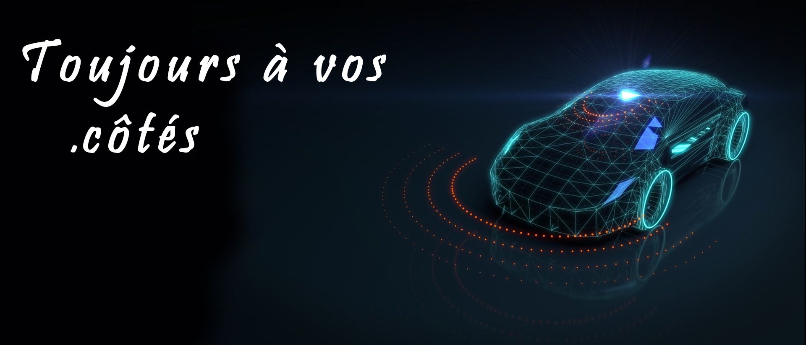

Futuro Tech est une entreprise spécialisée dans le développement de logiciels personnalisés destinés aux PME, aux startups et aux particuliers. Nous concevons des solutions sur mesure pour répondre aux besoins spécifiques de nos clients, en optimisant leurs processus internes grâce à des technologies adaptées et innovantes.
Mon profil LinkedIn